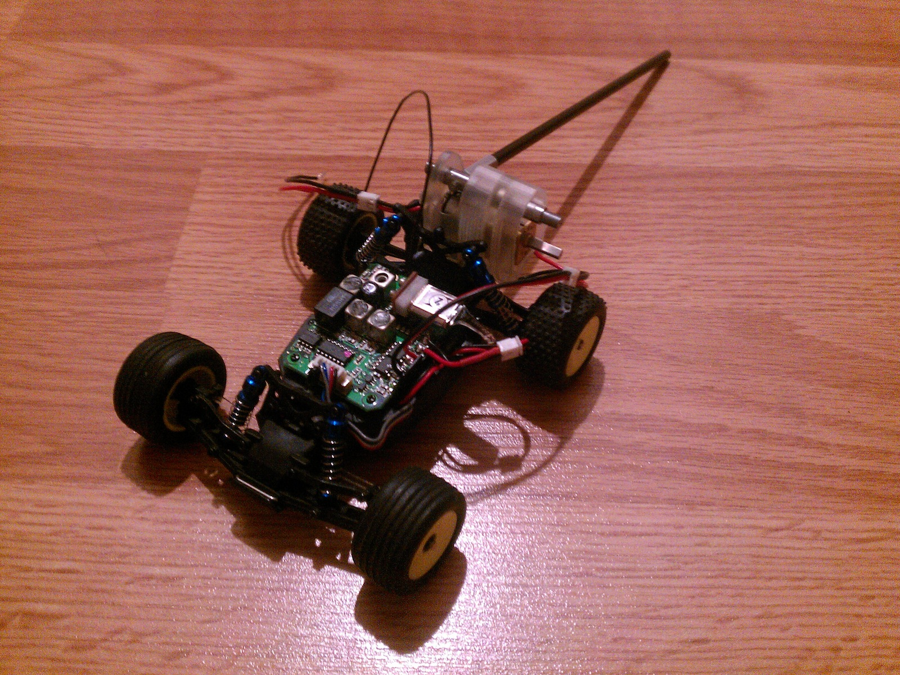

Tailbot V2
Continuing my work with the Mechanical Systems Control Lab, I worked over the summer in Center for Interdisciplinary Bio-Inspiration for Education and Research (CiBER) to create an upgraded version of the pre-existing Tailbot with pitch control for Professor Robert Full and Tom Libby. In addition to sporting a weighted carbon fiber tail with an off the shelf Losi RC car as the chassis, the new Tailbot would have increased maneuverability compared to its predecessor. (i.e. turn left and right)
I completed the mechanical design and assembly for the backpack to the robot, but found that using preexisting electronics to build a controller that complied with size constraints to be too difficult. Unfortunately, I ran out of time in my undergraduate career and transitioned the project to another set of undergraduate students this past summer.
Now, I help two other undergraduates in their redesign of the backpack as well as guide them through integrating a controller of their own.
{kind=link}

From left to right:
Losi Tailbot with tail and mount attached to the chassis (112912).
Short clip of Losi flipping its tail, at my control, for the very first time. The robot still has a ways to go, but this moment marked a milestone for Losi Tailbot (11-29-12).
The 3D conceptual model for the tail integrated with the remote controlled car. Electronics and front suspensions removed for clarity (11-29-12